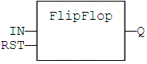
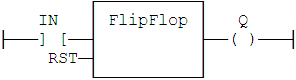

Function Block
Flipflop bistable.
|
Name |
Type |
Description |
|
IN |
BOOL |
Swap command (on rising edge). |
|
RST |
BOOL |
Reset to FALSE. |
|
Name |
Type |
Description |
|
Q |
BOOL |
Output. |
The output is systematically reset to
FALSE if RST is
TRUE.
The output changes on each rising edge of the IN input, if RST is
FALSE.
MyFlipFlop is declared as an instance of FLIPFLOP function block:
MyFlipFlop (IN, RST);
Q := MyFlipFlop.Q;

The IN command is the rung - the rung is the output:
